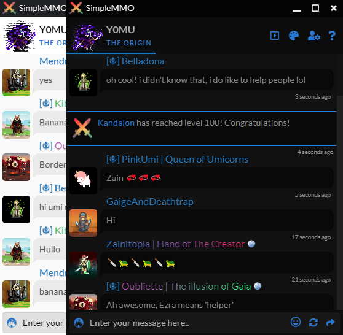

Created with players in mind
Unique and very useful for daily chatters
Author Y0mu

Custom themes -> option to add, remove, customize, export or import themes
Option to stay always on top of windows
Profanity filter
Click on name in chat:
• Left Click -> Tag the name in text area
• CTRL + Left Click -> Copy the name
• Shift + Left Click -> Quick Action (Change in settings)
• Right Click -> Player action menu with options like Attack, View, Send, etc. (opens in default browser)
Emoji keyboard
Reverse flow of chat
SOFT updating - chat does not get automatically updated if you are not scrolled to top
Notification showing how many new messages are there since the last update -> updates chat on click
Latest version: 0.7.0-beta